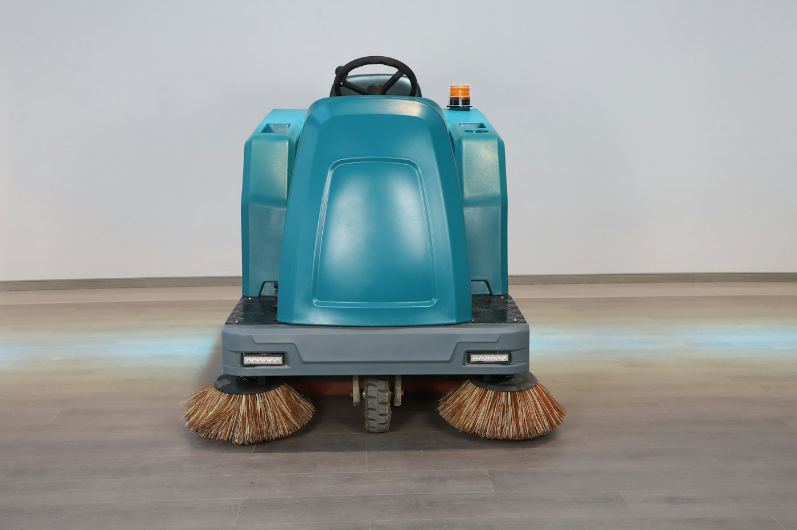

Teppich- und Polsterreinigung im Schwarzwald
Wir reinigen Teppichböden, Sofas, Sessel und Matratzen direkt bei Ihnen vor Ort per Sprühextraktion, gründlich bis in die Faser und schonend für das Material.
- Sprühextraktion direkt vor Ort
- Materialtest vor jeder Reinigung
- Vorbehandlung von Flecken und Gerüchen
- Kostenlose Besichtigung vor Ort

- Besichtigung kostenlos
- Antwort innerhalb von 24 Stunden
- Schriftliches Angebot mit Festpreis
- Deutsch, Türkçe, English
Warum Teppiche und Polster eine Tiefenreinigung brauchen
Teppiche und Polster nehmen jeden Tag Staub, Hautschuppen und Schmutz auf. Mit der Zeit setzen sich diese Rückstände tief in Fasern und Polsterung fest, zusammen mit Hausstaubmilben, Gerüchen und Flecken. Ein Staubsauger erreicht nur die Oberfläche, und Hausmittel verteilen Flecken oft nur oder hinterlassen Ränder.
Bei der Sprühextraktion sprühen wir eine Reinigungslösung in die Fasern und saugen sie im selben Arbeitsgang mit dem gelösten Schmutz wieder ab. Vorher prüfen wir das Material an einer verdeckten Stelle auf Farbechtheit und behandeln Flecken gezielt vor. Es bleibt nur wenig Feuchtigkeit zurück, deshalb sind Teppich oder Polster meist nach einigen Stunden wieder trocken.
Ob das Sofa in Ihrer Wohnung in Freiburg, der Teppichboden im Büro in Lahr oder die Matratzen Ihrer Ferienwohnung in Hinterzarten: Wir kommen mit eigenen Geräten und Mitteln zu Ihnen. Bei Ferienwohnungen planen wir die Reinigung zwischen zwei Gästen so, dass bis zur nächsten Anreise genug Zeit zum Trocknen bleibt.
Unser Leistungsumfang
Verlegte Teppichböden
Tiefenreinigung von Teppichböden in Wohnungen, Büros und Treppenhäusern per Sprühextraktion, auf Wunsch abschnittsweise.
Lose Teppiche
Läufer und Teppiche reinigen wir vor Ort, bei wertvollen handgeknüpften Stücken prüfen wir vorher die Eignung.
Sofas und Sessel
Sitzflächen, Rücken, Kissen und Armlehnen aus Stoff oder Mikrofaser gründlich reinigen, auch bei Eck- und Schlafsofas.
Bürostühle und Sitzmöbel
Bürostühle, Besucherstühle und Sitzbänke in Serie reinigen, gern abends oder am Wochenende, wenn das Büro leer ist.
Matratzen und Polsterbetten
Beide Seiten der Matratze reinigen und Hausstaub, Milben sowie deren Rückstände mit dem Schmutzwasser absaugen.
Flecken vorbehandeln
Kaffee, Rotwein, Fett oder Tinte behandeln wir mit passenden Mitteln vor, bevor die eigentliche Reinigung beginnt.
Gerüche reduzieren
Gerüche von Haustieren, Rauch oder Essen behandeln wir mit geruchsbindenden Mitteln und mindern sie so deutlich.
Materialtest vorab
Vor jeder Reinigung prüfen wir Pflegeetikett, Faser und Farbechtheit an einer verdeckten Stelle.
Für wen wir Teppiche und Polster reinigen
- Privathaushalte
- Vermieter von Ferienwohnungen
- Büros und Verwaltungen
- Hotels und Pensionen
- Arztpraxen und Wartebereiche
- Hausverwaltungen bei Mieterwechsel
So läuft es ab
Anfrage starten- 1
Anfrage
Sie schicken uns Fotos per WhatsApp, oder wir sehen uns Teppiche und Polster kostenlos vor Ort an.
- 2
Materialtest
Wir prüfen Stoff, Pflegeetikett und Farbechtheit und sagen Ihnen offen, was bei Flecken realistisch ist.
- 3
Reinigung
Wir behandeln Flecken vor und reinigen anschließend Fläche für Fläche per Sprühextraktion.
- 4
Trocknung
Sie erhalten Hinweise zum Lüften, und wir sagen Ihnen, ab wann Sofa, Bett oder Teppich wieder nutzbar sind.
Was kostet eine Teppich- oder Polsterreinigung?
Der Preis richtet sich nach Menge, Material und Verschmutzung. Nach Besichtigung oder Fotos erhalten Sie ein schriftliches Angebot mit Festpreis.
Für Ferienwohnungen und Hotels mit mehreren Einheiten erstellen wir gern ein Rahmenangebot.
Festpreis anfragen- Menge und Größe
- Die Zahl der Sitzplätze, Matratzen und Stühle oder die Quadratmeter Teppichboden bestimmen den Zeitaufwand.
- Material und Faser
- Empfindliche Stoffe wie Samt oder Naturfasern brauchen mehr Sorgfalt als robuste Mikrofaser.
- Flecken und Gerüche
- Viele oder alte Flecken und starke Gerüche erfordern zusätzliche Vorbehandlung und mehr Durchgänge.
- Zugang und Termin
- Möbelrücken, obere Stockwerke ohne Aufzug und Termine am Abend oder Wochenende fließen in die Kalkulation ein.
Im ganzen Schwarzwald für Sie da
Wir reinigen Teppiche und Polster im gesamten Schwarzwald, unter anderem in Freiburg, Lahr, Emmendingen, Titisee-Neustadt, Hinterzarten, Freudenstadt und Baden-Baden.
Häufige Fragen
Gehen alle Flecken heraus?
Nicht immer. Frische Flecken lassen sich meist gut entfernen, alte Flecken aus Rotwein, Tinte oder Rost können sich dauerhaft mit der Faser verbunden haben. Wir sagen Ihnen nach dem Materialtest offen, was realistisch ist.
Wie lange dauert das Trocknen?
In der Regel einige Stunden, je nach Material, Raumtemperatur und Lüftung. Matratzen und dicke Polster brauchen länger, deshalb reinigen wir sie am besten am Vormittag.
Ist die Reinigung für jeden Stoff geeignet?
Die meisten Bezüge aus Stoff und Mikrofaser vertragen die Sprühextraktion gut. Bei Leder, Seide, Viskose oder empfindlichen Naturfasern prüfen wir vorher, ob eine Nassreinigung infrage kommt, und sagen es Ihnen offen, wenn nicht.
Hilft die Reinigung gegen Hausstaubmilben?
Die Sprühextraktion saugt Hausstaub, Milben und ihre Rückstände mit dem Schmutzwasser aus Matratzen und Polstern ab. Für eine dauerhafte Wirkung empfiehlt sich eine regelmäßige Reinigung.
Muss ich während der Reinigung zu Hause sein?
Nur zu Beginn und am Ende, damit wir den Ablauf besprechen und das Ergebnis gemeinsam ansehen können. Bei Ferienwohnungen reicht oft eine Schlüsselübergabe.
Brauchen Sie Strom und Wasser vor Ort?
Ja, einen Stromanschluss und Zugang zu Wasser. Geräte und Reinigungsmittel bringen wir selbst mit.
Passende Leistungen

Grund- und Umzugsreinigung
Wir reinigen Wohnungen und Häuser einmalig und gründlich, ob vor dem Einzug, nach dem Auszug oder nach einer Renovierung. So können Sie der Wohnungsübergabe gelassen entgegensehen.
Mehr erfahren
Ferienwohnungen und Gastgewerbe
Zwischen Check-out und Check-in machen wir Ferienwohnungen, Pensionen und kleine Hotels wieder gästefertig, auch am Wochenende und in der Hauptsaison.
Mehr erfahren
Bodenreinigung und Bodenpflege
Wir reinigen und pflegen Ihre Böden maschinell und wählen Verfahren und Mittel passend zum Belag, damit er sauber, geschützt und lange schön bleibt.
Mehr erfahrenSagen Sie uns, was sauber werden soll.
Beschreiben Sie kurz Objekt und Leistung. Wir melden uns innerhalb von 24 Stunden mit einem Terminvorschlag.
- Telefon und WhatsApp
- +49 162 9763733
- Erreichbar
- Montag bis Samstag, 7 bis 19 Uhr
- Einsatzgebiet
- Schwarzwald und Umgebung